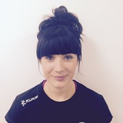

WHY SHOULD I TRAIN ABS?
When it comes to training your abdominals (abs), there are many benefits you can reap by strengthening your core. This includes:
- Everyday activities such as bending, turning and sitting might seem easy or mundane but once they become painful or difficult they're hard to ignore. A strong core helps give you the foundation and inner strength to lead the life you want.
- Modern life means we're inevitably sitting more, which can lead to numerous issues, including back pain. Regularly training your core helps improve your posture, reduce slouching and lessens the likelihood of back pain.
- Improve your performance in sports: Other body parts may be more prominent in sports such as football, golf, cycling, tennis, swimming, running or netball but the central motions for each sport originate in and are powered by one thing: a strong core.
- A strong core can help you utilise other body parts to optimal efficiency, so if you’re focusing on improving strength in other areas, it’s important not to neglect your abs.
- Whether you're standing, walking or running, maintaining your balance is an essential way to avoid injury. Having a strong core will stabilise your body giving you the freedom to move to your heart's content with minimal risk of falling.
There are four main muscles in your abs - rectus abdominis, external obliques, internal obliques and transverse abdominis. The following exercises target them all, leading to improvements in your core strength, stability and posture.
When it comes to getting a flat stomach, working the transverse abdominis is the most important. These muscles pull in the abs to the spine, creating a stronger core, slimmer waist and also help with improving posture and relieving lumbar pain.
Strengthen and tone your midsection with variations of the plank exercise.
Main muscles worked:
- Abdominals
- Back
- Shoulders
- Glutes
Train your torso by targeting your key core muscles with sit ups.
Main muscles worked:
- Abdominals
- External obliques
- Hip flexor
- Quadriceps
Your core muscles have a huge impact on your balance and stability, by building strength here you will be creating an even balance throughout your body. When you have a weak core, strength from other muscles gets used instead to compensate, which in turn could lead to injury. By choosing the correct core exercises you will not only be blasting those abs but also strengthening and engaging your pelvis, lower back and hips.
Carolyn Logan
Coach/Psycho